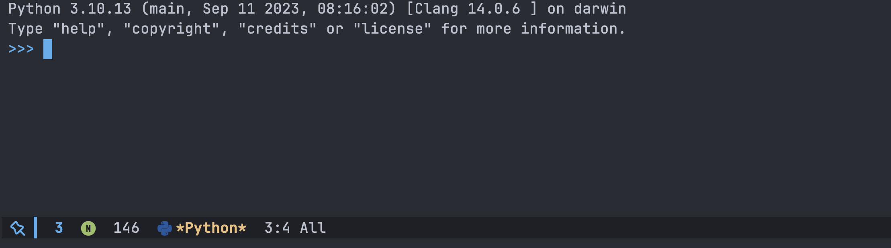
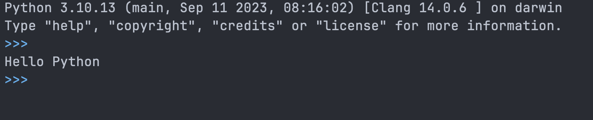

在 Emacs 中使用 Python 解释器
文章目录
前言
使用 Python 的知道可以在终端中进行一些代码的简单测试，验证一下想法。
这个功能在 Emacs 中也是能用的，今天来介绍一下。
Python Mode
Python Mode 是 Emacs 内置的可以直接使用，所以不需要安装第三方插件。
不过在使用之前还是要先启用一下
|
|
启动解析器
在使用之前需要先启动解析器，可以通过 run-python 来启动，或者使用 C-c C-p 快捷键来启动。
如下所示： 
注意使用快捷键需要在 Python Mode 中才有用。
执行 Python 代码
启动好 Python 解析器后，就可以创建一个 .py 文件来编写代码了，以 Hello Python 为例：
|
|
写好之后就可以通过 C-c C-c 来把整个 buffer 中内容发送到解析器进行执行。
这样就能够在解析器中看到内容了。 
常用的快捷键和命令在下方表格列出来了
| 快捷键 | 指令 | 解释 |
|---|---|---|
| C-c C-c | python-shell-send-buffer | 把当前 buffer 内容发送到解析器 |
| C-c C-e | python-shell-send-statement | 把当前光标下的语句发送到解析器 |
| C-c C-l | python-shell-send-file | 选择一个文件发送到解析器 |
| C-c C-r | python-shell-send-region | 把当前选中的一个区域发送到解析器 |
| C-c C-s | python-shell-send-string | 从 mini buffer 中输入代码发送到解析器 |
| C-c C-z | python-shell-switch-to-shell | 当前光标焦点切换到解析器 |
不想使用了可以使用 C-c C-d 来终止解析器。
总结
为什么要这么麻烦在文件和解析器中来回折腾？
- 可以实现代码和结果的分离，发送到解析器的代码是不会显示的，只能看到结果
- 可以借助
Emacs的强大功能进行开发，包括代码提示，语法高亮，自己编写的功能等等，有点类似ipython - 这些代码想要的话可以保存起来，不用重新再写一遍，避免在终端中写了之后觉得还不错想要保留的情况。